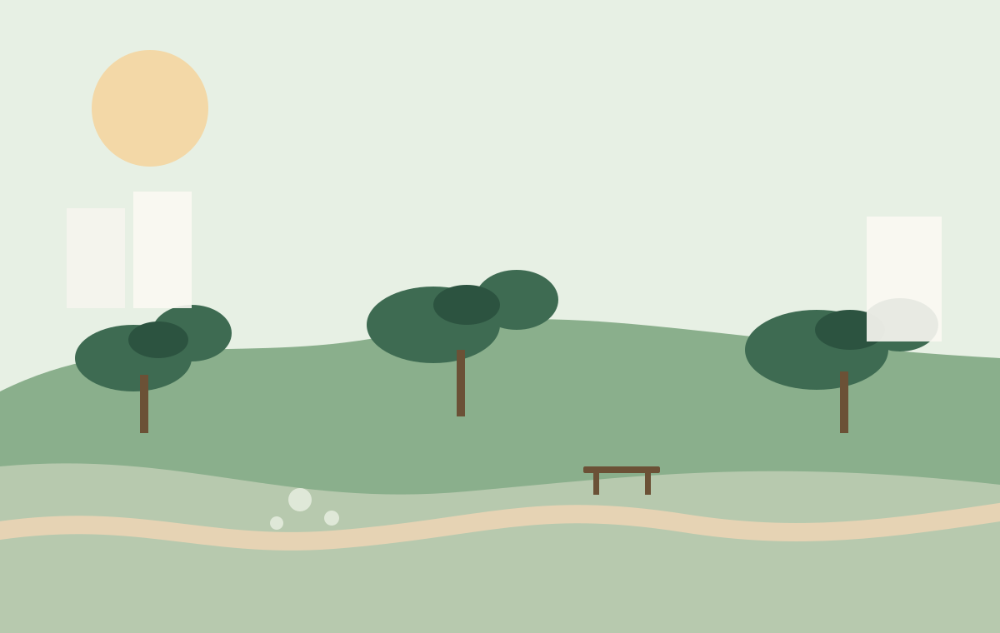

Academic City
Dubai International Academic City is beside Silicon Oasis. Universities and student life are already part of this side of the city.
The Grounds Location
East Dubai
The Grounds is in Dubai Silicon Oasis. The district is confirmed. The pin inside it — the site plan — is released with the launch.
The district
Dubai Silicon Oasis is a technology free zone and a place people already live. Offices, homes, schools, shops and clinics are there. Dubai International Academic City is next to it, which is why the district suits families and people who work nearby.

Distances to the station and to Downtown depend on the final plot and on traffic. They are not fixed until the site plan is published.
Dubai International Academic City is beside Silicon Oasis. Universities and student life are already part of this side of the city.
Beside
A government free zone built as a business hub, with residential communities and everyday services around it.
The community
Inside Dubai Silicon Oasis. Aldar and Dubai Holding. Exact position within the district to follow at launch.
How you get there
Al Ain Road and Sheikh Mohammed Bin Zayed Road are the highways that serve east Dubai and this district.
And
The planned line includes a Dubai Silicon Oasis station. The RTA schedule puts the opening on 9 September 2029.
Silicon Oasis is an employment centre, and the community itself is planned with workplaces, so some days need not start on the road.
The district already has schools, shops and clinics. Academic City adds a large campus cluster next door.
Inside The Grounds, homes, retail and green space are meant to cover the ordinary day. The wider district covers the rest.
Drive times to Downtown, the marina and the airport depend on where the plot sits. Use the official map once Aldar publishes it.
Dubai Silicon Oasis, in east Dubai. The same community is sometimes called The Grounds Dubai or The Grounds Aldar. All of those names point here.
The district is confirmed. The position inside Dubai Silicon Oasis, and the site plan, are released with the launch.
The Dubai Metro Blue Line is planned to include a Silicon Oasis station, scheduled to open on 9 September 2029. How far that station is from the front door depends on the final site plan.
No honest drive time can be given until the plot is fixed. Traffic and the final site both change the number. Check it on the official map when that map exists.
Register interest
Leave a contact and the home you are considering. This does not reserve anything.